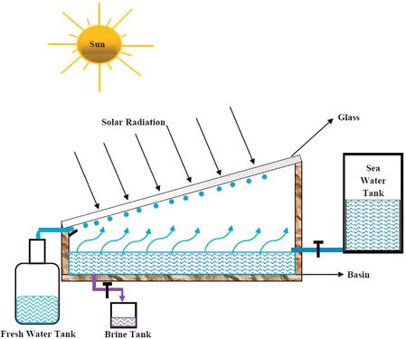
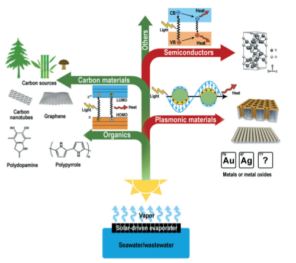

Water treatment using solar-powered evaporators:
problems and opportunity
Problem Addressed
To increase water supply, more difficult water sources, such as saltwater or wastewater, will have to be used. There are technologies that can turn these sources into usable streams, but they come at a great energy and economic cost. As a result, new ways to enhance energy efficiency or boost the use of low-cost, renewable energy sources for water treatment are urgently needed.
Solution
Solar-powered evaporators provide a long-term sustainable solution for obtaining freshwater from seawater and wastewater; therefore, developing design techniques for efficient, long-lasting, and integrateable evaporators is critical.
Explanation
Separating water from salt ions is limited by thermodynamics, but if the energy for these processes can be derived from low-carbon and abundant sources, the total energy system's load can be reduced. By far the most plentiful source of such energy is sunlight. Electricity generated by solar systems, for example, may be used to power pumps in a RO (Reverse Osmosis) desalination plant. Solar energy may also be utilised to power the water distillation process. Despite the fact that a phase change process such as distillation requires more energy than RO, the systems can be much easier to deploy, making them suited for smaller-scale applications or regions with fewer infrastructure. The justification for solar-powered evaporators is arguably even greater in the case of wastewater treatment, where fouling may be a huge problem for membrane filtration.
Because water is a poor absorber of sunlight, photothermal materials that can gather a broad spectrum of light and convert it to heat must be used. Some of the reported photothermal materials include carbon, metal nanoparticles and their compounds, semiconductors and special polymers. In several early studies, plasmonic nanoparticles were disseminated in the bulk solution for solar heating and evaporation. However, much of the produced heat is spent in raising the bulk temperature, resulting in a poor evaporation efficiency. Energy losses can be reduced by localising heat at the evaporation (air/water) interface rather than heating the complete body of water to be treated. The usage of photothermal materials that float on top of the water can help with this localisation.
Challenges and some ideas to reduce them
The absorption and reflection of incoming light are affected by both material components and structure, and evaporation efficiency may be improved by limiting heat loss, increasing surface area, and recycling latent heat.
Salt scaling is a major issue with solar-powered evaporators, especially in desalination applications. In general, photothermal materials come into direct contact with salty water and convert solar irradiation into heat along with the air/water interface, causing evaporation to occur. Rapid evaporation causes a significant increase in local ion concentration, which leads to crystallization at an oversaturated concentration. The buildup of salt crystals causes scale to develop. Scaling not only obstructs water movement by blocking the inner channels of porous evaporators, but it also covers the surface of the photothermal material and reflects solar irradiation, compromising evaporation performance and potentially irreparably deteriorating evaporators. Because the current inevitability approach includes mechanical removal of the salt, avoiding scaling has piqued researchers' interest in recent years. Surface features and structure can be tailored to meet scaling.